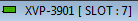
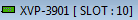

#Launch main Miranda Isolo Control and select the correct board #This script assume that the Java GUI is already running. #inputs: isoloCmd=[] slotNumber=[] isoloWaitTime=[] #Usage: miranda_isolo_launcher.sikuli slotNumber=7 ############################################################### #common code for every sikuli code. Do not remove this section from commonlib import * ############################################################### #YOUR code start here ############################################################### #This is your check for the inputs that you are expecting. def Check_args(): #checking for required arguments if not Get_arg('isoloCmd'): my_isolocmd = 'C:\\Tools\\iControlSolo_B6_00_RC3.exe' Set_arg('isoloCmd', 'C:\\Tools\\iControlSolo_B6_00_RC3.exe') Print_debug('Miranda Isolo Command is not given. Will use default: ' + my_isolocmd) if not Get_arg('slotNumber'): Set_arg('slotNumber', '7') Print_debug('Miranda slot number is not given. Will use default 7.') if not Get_arg('isoloWaitTime'): Set_arg('isoloWaitTime', '120') Print_debug('Miranda Isolo Control software wait time is not given. Will use default 300.') Check_args() ############################################################ #Main program definitions code start from this point #Any global variables here MirandaIsoloTitle = 'Miranda iControl Solo' my_waittime = Get_arg('isoloWaitTime') my_slotnumber = Get_arg('slotNumber') MirandaJavaTitle = 'XVP-3901 [ SLOT : ' + my_slotnumber + ']' #Any definitions are here #launch the main Miranda Isolo Control software #Select Mirando Slot Number def Select_Slot(): find(); click(Pattern().targetOffset(-11,45)) find() if int(my_slotnumber) == 4: click(Pattern().targetOffset(-3,-16)); sleep(1); doubleClick(Pattern().targetOffset(-3,-16)); sleep(1) wait(, int(my_waittime)) elif int(my_slotnumber) == 7: click(Pattern().targetOffset(-4,0)); sleep(1); doubleClick(Pattern().targetOffset(-4,0)); sleep(1) wait(, int(my_waittime)) elif int(my_slotnumber) == 10: click(Pattern().targetOffset(1,16)); sleep(1); doubleClick(Pattern().targetOffset(1,16)); sleep(1) wait(, int(my_waittime)) elif int(my_slotnumber) == 16: click(Pattern().targetOffset(1,32)); sleep(1); doubleClick(Pattern().targetOffset(1,32)); sleep(1) wait(, int(my_waittime)) else: Print_text('Invalid Miranda slot number specified not in range [4,7,10,16]: ' + my_slotnumber) #wait for the right windows mycmd = 'auto_windows_manager.exe windows_title=\"' + MirandaJavaTitle + '\" windows_action=2' Run_cmd(mycmd) def Launch_Isolo(): #First check if the correct slot is already running mycmd = 'auto_windows_manager.exe windows_title=\"' + MirandaJavaTitle + '\" windows_action=2' my_status = Run_cmd(mycmd) Print_debug(my_status) if int(my_status) == 0: Print_debug(MirandaJavaTitle + ' is already running. Use current session.') else: #First find out if Isolo is already running or not mycmd = 'auto_windows_manager.exe windows_title=\"' + MirandaIsoloTitle + '\" windows_action=2' my_status = Run_cmd(mycmd) if int(my_status) == 0: Print_debug(MirandaIsoloTitle + ' is already running. Use current session.') else: Print_debug(MirandaIsoloTitle + ' is not currently running. Need to launch it now.') my_isolocmd = Get_arg('isoloCmd') my_app = openApp(my_isolocmd) Print_debug('Waiting for Miranda Isolo Control software to come up... ' + my_waittime) wait(, int(my_waittime)) if exists(): mycmd = 'auto_windows_manager.exe windows_title=\"' + MirandaIsoloTitle + '\" windows_action=2' my_status = Run_cmd(mycmd) wait(, int(my_waittime)) Select_Slot() ####################################################### #Main program flow Launch_Isolo()